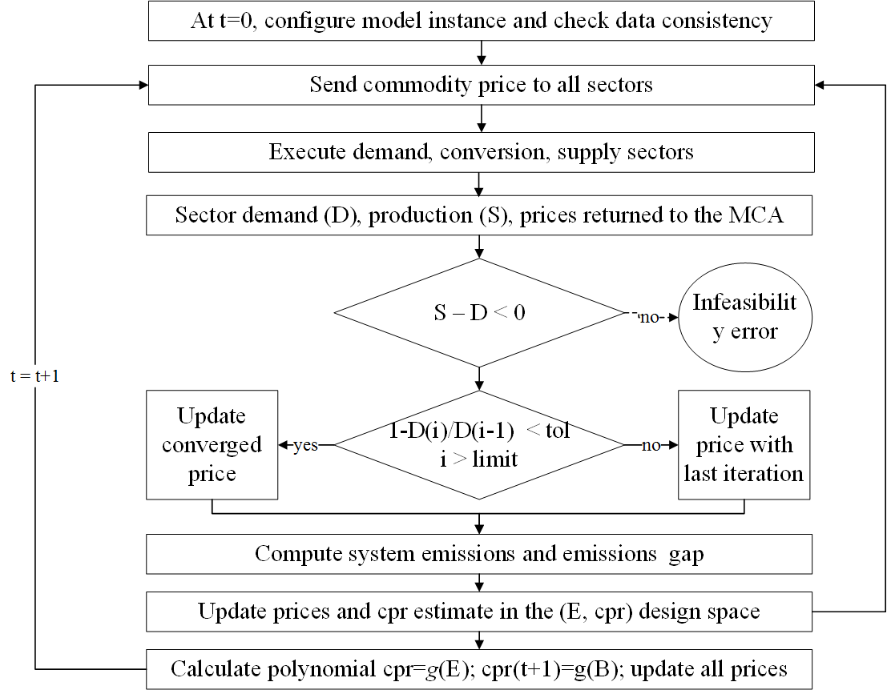

Market Clearing Algorithm¶
In the MUSE modelling framework, the MCA governs the model workflow until the end of the simulation.
The MCA can operate
in an “equilibrium” mode when it calculates endogenous prices obtained from each commodity equilibrium for all the future periods following the base year
in a “carbon budget” mode when in addition to each commodity equilibrium price the MCA will be calculating an additional global market price for the emissions to meet a carbon trajectory
in an “exogenous” mode, when it uses the initial market projection as the projection for the the base year and all the future periods of the simulation
The MCA methodology is conceived to guarantee that the carbon budget constraints are met in simulated energy systems where investors have imperfect knowledge of future price trajectories. The methodology ensures that:
the commodity market converges on market-clearing prices, which means that demand and supply agree on the price of the commodity exchanged against convergence criteria on the relative variation of the demand of each commodity between consecutive iterations.
the future price trajectory is updated using the concept of imperfect foresight, which means that the knowledge of the future prices is available to the investors until a configurable number of year (i.e. the foresight period). A flat-forward price trajectory is assumed after the foresight period.
The global carbon budget is imposed through an exogenous profile of the systems emissions over time. Emission reduction is guaranteed through an endogenously escalating carbon price. An analytic method is used to the update the carbon price based on a reduced order model of the system emission dependence with the carbon price. The number of parameters to fit the polynomial used in the model is chosen to guarantee robustness while keeping to a minimum the computational burden of the simulation. Being a simulation model operating with imperfect foresight, in the event that a specific value of the emissions is larger or lower than the corresponding emissions expected at a specific simulation time, the emissions offsetting the budget are translated to the next period.
The iterative procedure is shown in the figure below where:

t represents a generic simulated time period
D is the commodity demand by time period and region
B is the global carbon budget in a period t
S is the commodity production by time period and region
i corresponds to a generic iteration of the market
cpr is the carbon price
g represents a polynomial to describe the relationship between emissions and carbon price
{kind=link}